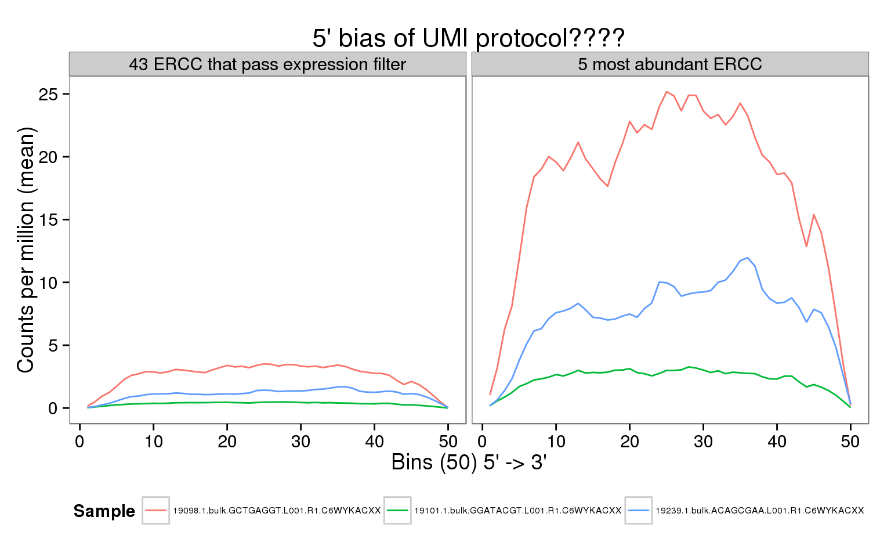

Last updated: 2016-02-23
Code version: 70509eb9a08ffe0fe459efc9de23d89ec424fe99
This is a companion to the analysis of the bulk read coverage of endogenous genes. It must be run first to prepare the bam files. We do not observe the expected 5’ bias of the UMI protocol for the ERCC spike-ins.
Using the bulk reads, we observe a uniform coverage across the ERCC gene body and more pronounced differences between individuals compared to the single cell molecules or reads.
library("genomation")
library("plyr")
library("tidyr")
library("ggplot2")
theme_set(theme_bw(base_size = 14))
theme_update(panel.grid.minor.x = element_blank(),
panel.grid.minor.y = element_blank(),
panel.grid.major.x = element_blank(),
panel.grid.major.y = element_blank())Input filtered read counts for bulk samples.
reads_bulk_filter <- read.table("../data/reads-bulk-filter.txt", header = TRUE,
stringsAsFactors = FALSE)
reads_bulk_ercc <- reads_bulk_filter[grep("ERCC", rownames(reads_bulk_filter)), ]Input ERCC data from Invitrogen.
ercc_all <- gffToGRanges("../data/ERCC92.gtf", split.group = TRUE)splitting the group.column...Filter the ERCC spike-ins to only include those that pass the filter.
ercc_filter <- ercc_all[ercc_all$gene_id %in% rownames(reads_bulk_ercc)]Create subset that only include 5 most highly expressed ERCC spike-ins.
# Order by mean expression - from highest to lowest
mean_expr_ercc <- rowMeans(reads_bulk_ercc)
reads_bulk_ercc <- reads_bulk_ercc[order(mean_expr_ercc, decreasing = TRUE), ]
ercc_max <- ercc_filter[ercc_filter$gene_id %in% rownames(reads_bulk_ercc)[1:5]]Using the same bulk lane samples from the analysis of the bulk read coverage of endogenous genes.
bulk_lanes <- c("19098.1.bulk.GCTGAGGT.L001.R1.C6WYKACXX",
"19101.1.bulk.GGATACGT.L001.R1.C6WYKACXX",
"19239.1.bulk.ACAGCGAA.L001.R1.C6WYKACXX")
bam <- paste0("../data/", bulk_lanes, ".trim.sickle.sorted.bam")
stopifnot(file.exists(bam), file.exists(paste0(bam, ".bai")))Because the ERCC have different lengths, we have to bin them. ScoreMatrix and ScoreMatrixList handle one or multiple files, respectively, and calculate the coverage over windows of equal size. ScoreMatrixBin computes the coverage of one file over windows of unequal size. For some reason, ScoreMatrixBinList does not exist (here is an old issue from 2013 that discusses adding the feature for ScoreMatrix only). Thus we loop over the files manually.
filter_sm <- list()
for (b in bam) {
filter_sm[[b]] <- ScoreMatrixBin(target = b, windows = ercc_filter, type = "bam",
rpm = TRUE, strand.aware = TRUE, bin.num = 50)
}Normalizing to rpm ...
Normalizing to rpm ...
Normalizing to rpm ...filter_sm <- new("ScoreMatrixList", .Data = filter_sm)Calculate coverage for only the 5 most highly expressed ERCC.
max_sm <- list()
for (b in bam) {
max_sm[[b]] <- ScoreMatrixBin(target = b, windows = ercc_max, type = "bam",
rpm = TRUE, strand.aware = TRUE, bin.num = 50)
}Normalizing to rpm ...
Normalizing to rpm ...
Normalizing to rpm ...max_sm <- new("ScoreMatrixList", .Data = max_sm)names(filter_sm) <- bulk_lanes
filter_sm_df <- ldply(filter_sm, colMeans, .id = "sample_id")
colnames(filter_sm_df)[-1] <- paste0("p", 1:(ncol(filter_sm_df) - 1))
filter_sm_df$subset = "filter"
filter_sm_df_long <- gather(filter_sm_df, key = "pos", value = "rpm", p1:p50)names(max_sm) <- bulk_lanes
max_sm_df <- ldply(max_sm, colMeans, .id = "sample_id")
colnames(max_sm_df)[-1] <- paste0("p", 1:(ncol(max_sm_df) - 1))
max_sm_df$subset = "max"
max_sm_df_long <- gather(max_sm_df, key = "pos", value = "rpm", p1:p50)Combine the two features.
features <- rbind(filter_sm_df_long, max_sm_df_long)
# Convert base position back to integer value
features$pos <- sub("p", "", features$pos)
features$pos <- as.numeric(features$pos)
# Make subset factor more descriptive
features$subset <- factor(features$subset, levels = c("filter", "max"),
labels = c(paste(length(ercc_filter), "ERCC that pass expression filter"),
"5 most abundant ERCC"))ggplot(features, aes(x = pos, y = rpm, color = sample_id)) +
geom_line() +
facet_wrap(~subset) +
scale_color_discrete(name = "Sample") +
labs(x = "Bins (50) 5' -> 3'",
y = "Counts per million (mean)",
title = "5' bias of UMI protocol????") +
theme(legend.position = "bottom",
legend.text = element_text(size = 6))
Using the bulk reads, we observe a uniform coverage across the ERCC gene body and more pronounced differences between individuals compared to the single cell molecules or reads.
sessionInfo()R version 3.2.0 (2015-04-16)
Platform: x86_64-unknown-linux-gnu (64-bit)
locale:
[1] LC_CTYPE=en_US.UTF-8 LC_NUMERIC=C
[3] LC_TIME=en_US.UTF-8 LC_COLLATE=en_US.UTF-8
[5] LC_MONETARY=en_US.UTF-8 LC_MESSAGES=en_US.UTF-8
[7] LC_PAPER=en_US.UTF-8 LC_NAME=C
[9] LC_ADDRESS=C LC_TELEPHONE=C
[11] LC_MEASUREMENT=en_US.UTF-8 LC_IDENTIFICATION=C
attached base packages:
[1] grid stats graphics grDevices utils datasets methods
[8] base
other attached packages:
[1] ggplot2_1.0.1 tidyr_0.2.0 plyr_1.8.3 genomation_1.0.0
[5] knitr_1.10.5
loaded via a namespace (and not attached):
[1] Rcpp_0.12.0 formatR_1.2
[3] futile.logger_1.4.1 GenomeInfoDb_1.4.0
[5] XVector_0.8.0 bitops_1.0-6
[7] futile.options_1.0.0 tools_3.2.0
[9] zlibbioc_1.14.0 digest_0.6.8
[11] evaluate_0.7 gtable_0.1.2
[13] gridBase_0.4-7 DBI_0.3.1
[15] yaml_2.1.13 parallel_3.2.0
[17] proto_0.3-10 dplyr_0.4.2
[19] rtracklayer_1.28.4 httr_0.6.1
[21] stringr_1.0.0 Biostrings_2.36.1
[23] S4Vectors_0.6.0 IRanges_2.2.4
[25] stats4_3.2.0 data.table_1.9.4
[27] impute_1.42.0 R6_2.1.1
[29] XML_3.98-1.2 BiocParallel_1.2.2
[31] rmarkdown_0.6.1 reshape2_1.4.1
[33] lambda.r_1.1.7 magrittr_1.5
[35] Rsamtools_1.20.4 scales_0.2.4
[37] htmltools_0.2.6 GenomicAlignments_1.4.1
[39] BiocGenerics_0.14.0 GenomicRanges_1.20.5
[41] MASS_7.3-40 assertthat_0.1
[43] colorspace_1.2-6 labeling_0.3
[45] stringi_0.4-1 lazyeval_0.1.10
[47] RCurl_1.95-4.6 munsell_0.4.2
[49] chron_2.3-45